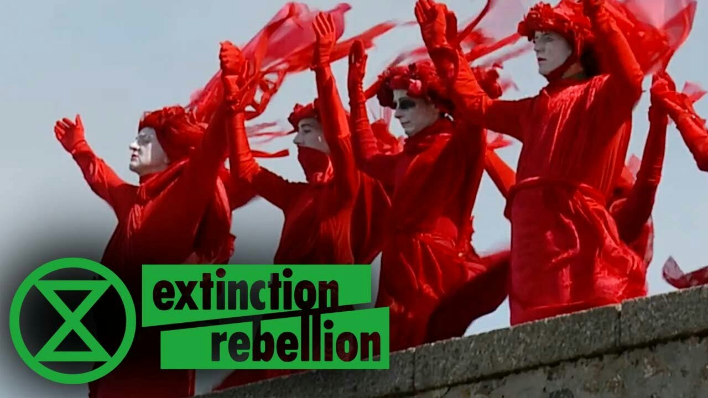

中文
下個禮拜日就是我們的行動！希望在下週的行動中看到你! 反抗滅絕台灣很樂意看到大家參與行動，不管是拿著海報或布條, 甚至參與Die-in
未來行動
XR活動摘要
 若您想參與舞蹈演出, 請email到:xrtaiwan@protonmail.com
台北市延平南路96號的警察局(電話:02 2331 3561)參與排練, 詳細地址請參見:
***請email告知我們是否能參與排演: xrtaiwan@protonmail.com
活動日期:11月24日
活動時間: 下午2-4點
地點:西門町峨嵋漢中街口(餐廳薩莉亞角落)
活動內容更新: 我們預計重複下列的流程四次, 吸引大眾的注意:
1. Opening Number
2. 生態詩順序
2.1 Mark
2.2 Irina
2.3 Renee
2.4 Jen
3. Die-in 喇叭/嗩吶伴奏
4. 兒童表演
5. 朗誦
6. Die-in
7. 群眾互動
活動中，我們將朗誦下列中文口號：
1. 一個地球，一次機會
2. 誰的地球? 我們的地球!
3. 台北是個盆地, 台北是個低窪地。台北將在12年內淹沒, 除非我們現在開始行動!
4. 2025年達到新零碳排！
5. 要求政府講出事實，宣告”氣候緊急”
6. 民主已被破壞！公民議會就是現在！
＊活動結束後有檢討會，將不召開例行週會
下次淨灘活動!

我們將一樣在Scubar 碰面，可能清理海灘或沿著海岸撿垃圾，看哪裡比較髒而決定，歡迎大家參加淨灘或午餐或例行會議，別擔心，若不參加例行會議可先行離開 :)
暫定流程:
10-12淨灘
12-13:30午餐
13:30-15:00 例行會議
日期: 12月8日 (日) 地點: Scubar on the Beach
地址:新北市貢寮區東興街17-2 號
ENGLISH
Next week is our action! We hope to see you all there. We need lots of people to help holding the posters and banners- very easier job! You will also be asked to participate in the die-in.
COMING-UP ACTIONS
XR action
If you are interested in joining the dance, we welcome you to join us earlier at 12pm at the following location:
Location:Taipei City Police Department, No. 96號, Yanping South Road, Zhongzheng District, Taipei City, 100
02 2331 3561
Day: 11/24 Time: 12pm
If you want to come for the dance rehearsal, please email us at xrtaiwan@protonmail.com so we know to expect you.
Day: 11/24 Time: 2-4pm Location: Ximen
New Update on the Action: We will do this same routine four times! If you are interested in dancing, you can check the discussion page of the action. If you aren’t no worries!
Updated Schedule:
1. Opening Number
2. Poem
2.1 V1: Mark
2.2 V2: Irina
2.3 V3: Renee
2.4 V4: Jen
3. Die in with trumpet
4. Kids
5. Chanting
6. Die in with trumpet
7. Educational outreach
We will be doing the following chants for the upcoming action, but only in Chinese.
1. 1 Earth, 1 Chance
2. Who’s planet? Our planet!
3. Taipei is a basin. Taipei is low-lying. Taipei will be underwater in 12 years. Unless we act now!
4. New Zero Carbon Emissions by 2025!
5. Demand the government to tell the truth. This is a climate emergency
6. Democracy is broken! People’s assembly now!
We are not going to be having a normal weekly meeting. We will have a short post-action briefing.
Next beach clean-up!
We will meet at Scubar and either clean the beach or along the coast- depending on what is the dirtiest. You are welcome to come for just the beach clean-up, lunch, or meeting! All up to you. If you don’t want to stay for the meeting, no worries!
Day: 12/8/19 (Sunday) Location: Scubar on the Beach
Address: No. 17-2, Dongxing Street, Gongliao District, New Taipei City, 228
Tentative Schedule:
10-12am Beach Clean-Up
12-1.30pm Lunch
1.30-3pm Meeting